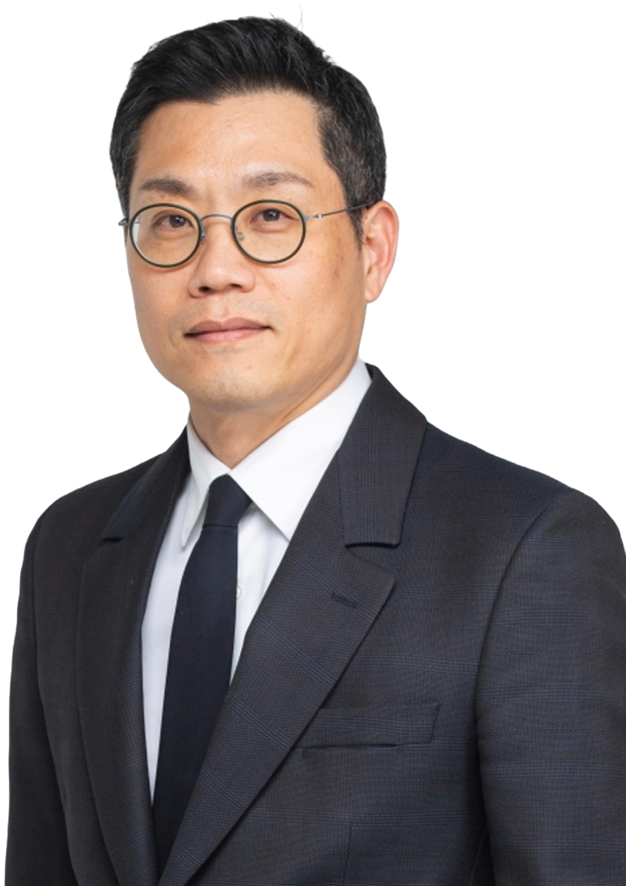

Duhee Park (박두희)
Department of Civil and Environmental Engineering
Hanyang University, Professor
Member, National Academy of Engineering of Korea (NAEK)
Tel:
82-2-2220-0322
Fax:
82-2-2293-0077
E-mail:
dpark@hanyang.ac.kr